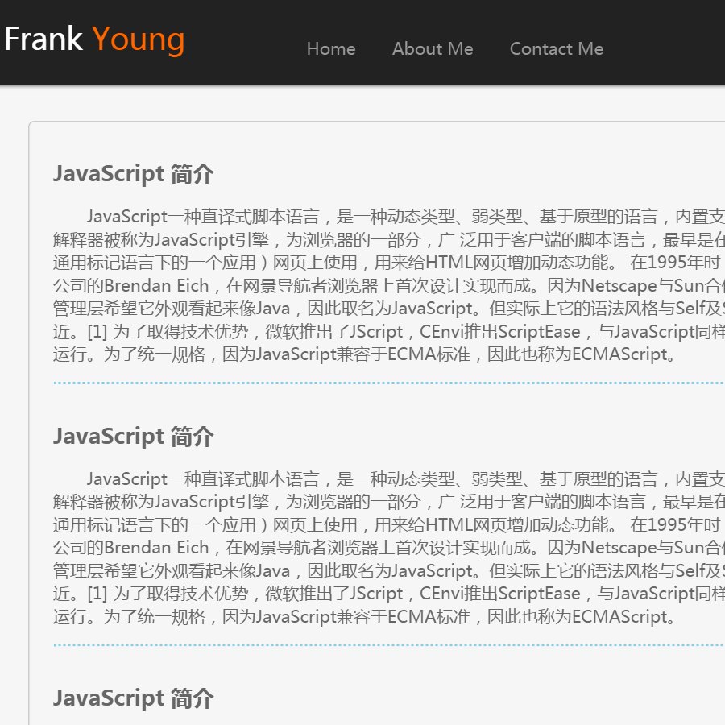
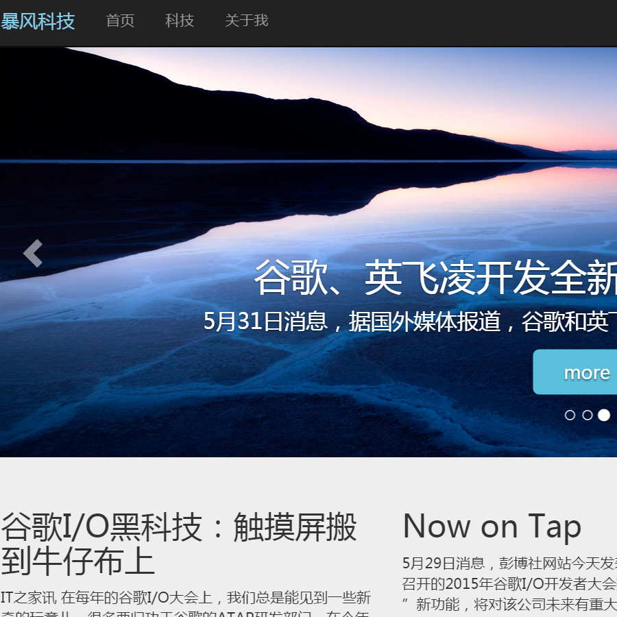
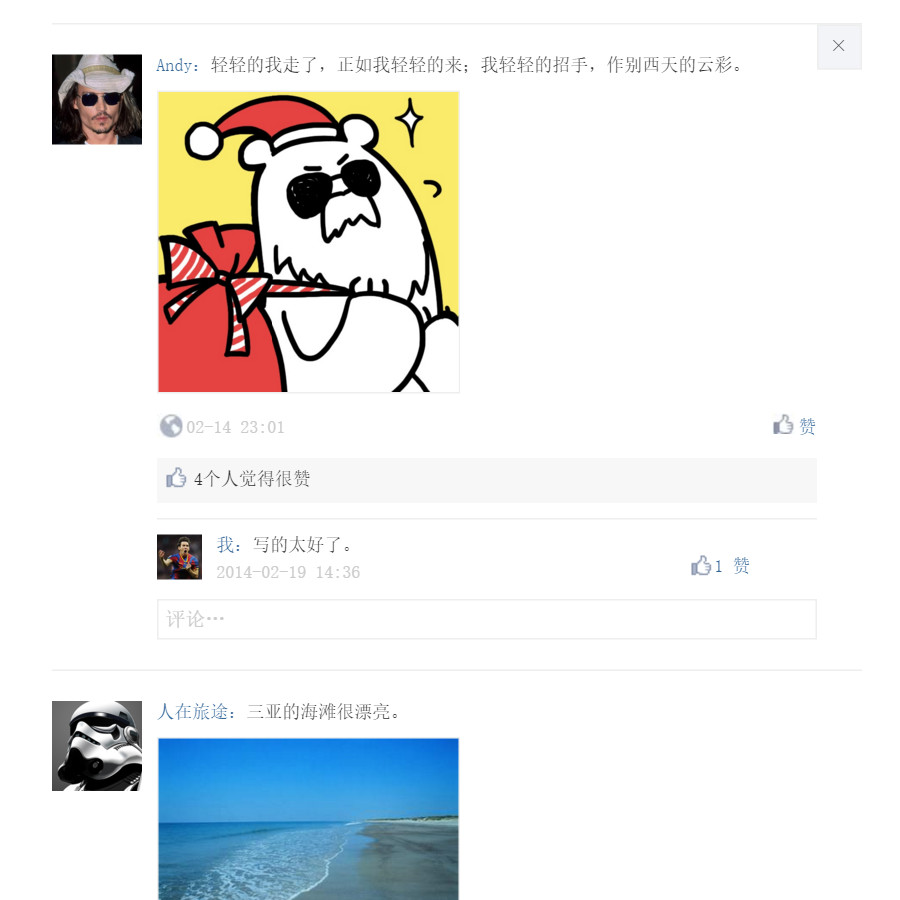
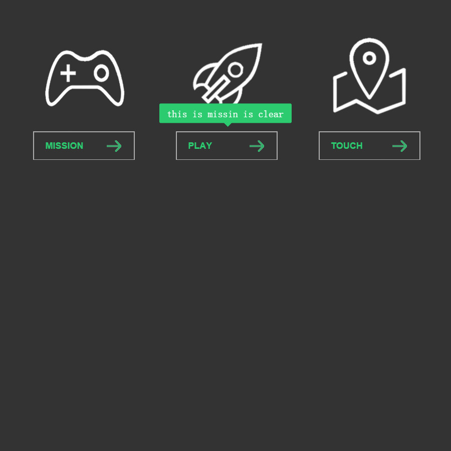
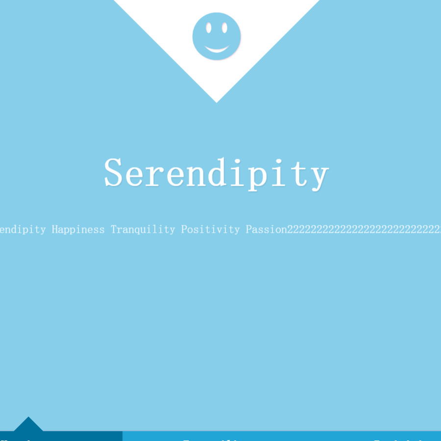
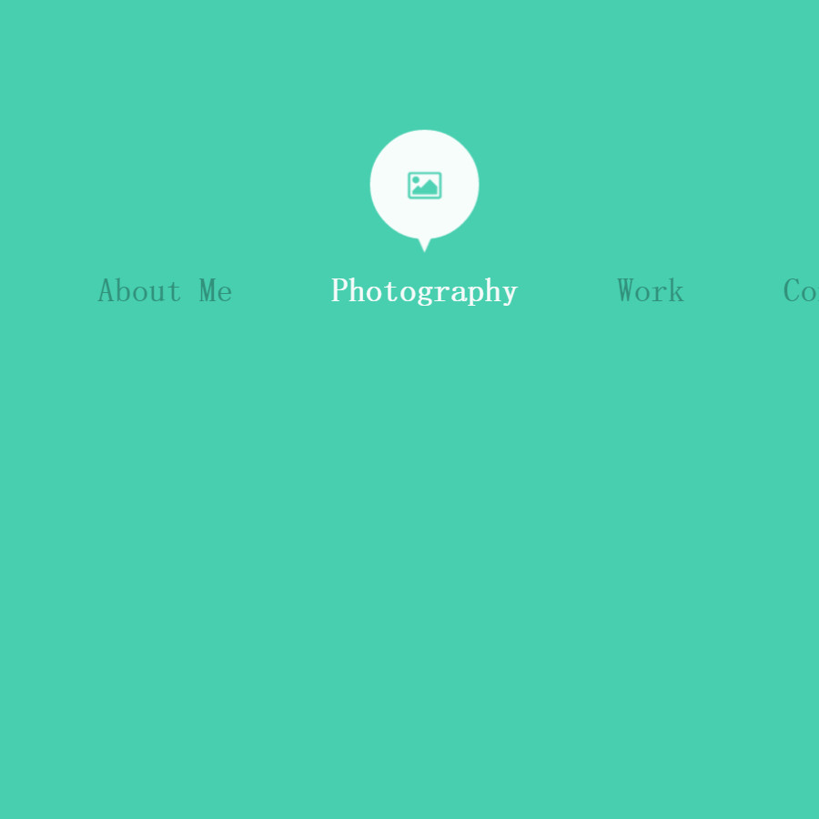
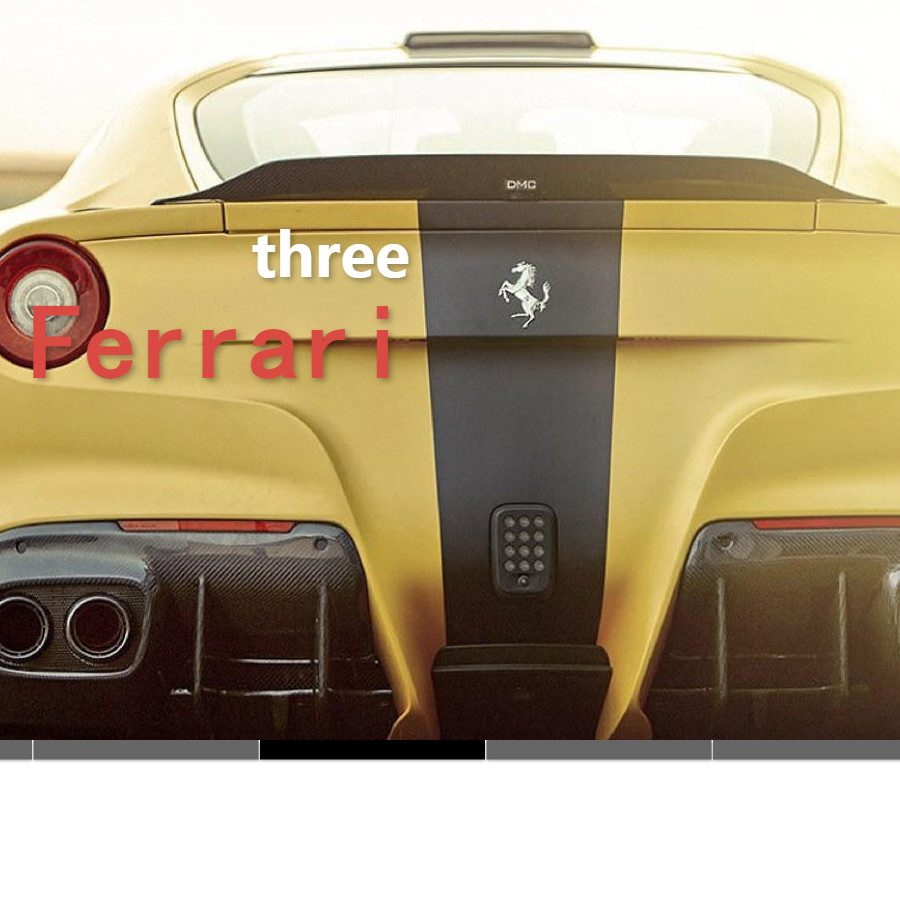

简单的博客页面
一个简单的博客页面，js验证的一些功能当然存在着一些漏洞，这也只是一个测试作品。 源码
查看详情 »

PHP系统前台
PHP作业的前台页面，用bootstrap框架搭建出来的，比较简单，时间也用的很短。 源码
查看详情 »

js实现的点赞和评论
1.可以点赞和回复，并且取消点赞 2.可以点赞别人的回复和自己的回复 3.删除自己的回复 源码
查看详情 »

幽灵按钮
慕课网学的css3幽灵按钮，主要运用了transition,transform等。 源码
查看详情 »

css3页面过渡
纯css3实现的页面过渡效果。主要运用了transition 和transform。 源码
查看详情 »

css3 toolTips
纯css3实现的鼠标滑过显示提示框。可用于导航提示，效果挺炫。源码
查看详情 »

js+css3幻灯片
js+css3实现的带预览图的幻灯片，用于首页大页面的轮换图，效果挺不错。 源码
查看详情 »